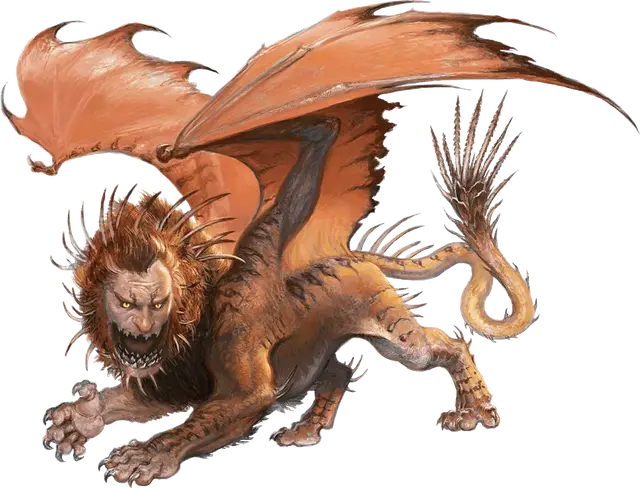

Мантикора
Manticore
Большой Монстр, законно-злой

Класс Доспеха 14 (природный доспех)
Хиты 68 (8к10 + 24)
Скорость 30 футов, летая 50 футов
| мод | спас | ||
|---|---|---|---|
| СИЛ | 17 | +3 | +3 |
| ЛОВ | 16 | +3 | +3 |
| ТЕЛ | 17 | +3 | +3 |
| мод | спас | ||
|---|---|---|---|
| ИНТ | 7 | −2 | −2 |
| МДР | 12 | +1 | +1 |
| ХАР | 8 | −1 | −1 |
Чувства тёмное зрение 60 футов, пассивное Восприятие 11
Языки Общий
Опасность 3 (700 опыта)
Бонус мастерства +2
Среда обитания Арктика, Горы, Луг, Побережье, Холмы
Особенности
Выращивание шипов на хвосте. У мантикоры есть 24 шипа на хвосте. Использованные шипы отрастают, когда мантикора оканчивает продолжительный отдых.
Действия
Мультиатака. Мантикора совершает три атаки: либо одну укусом и две когтями, либо три атаки шипами с хвоста.
Укус. Рукопашная атака оружием: +5 к попаданию, досягаемость 5 футов, одна цель. Попадание: Колющий урон 7 (1к8 + 3).
Коготь. Рукопашная атака оружием: +5 к попаданию, досягаемость 5 футов, одна цель. Попадание: Рубящий урон 6 (1к6 + 3).
Шип с хвоста. Дальнобойная атака оружием: +5 к попаданию, дистанция 100/200 футов, одна цель. Попадание: Колющий урон 7 (1к8 + 3).
Описание
«МАНТИКОРЫ ЛЮБЯТ ЧЕЛОВЕЧИНУ. ПОЭТОМУ ДЛЯ ГОРНЫХ ПЕРЕХОДОВ Я ВСЕГДА НАНИМАЮ В ОХРАНУ ЛЮДЕЙ».
— МАРТОК УЛЬДАРР, ДВАРФ, ТОРГОВЕЦ МЕДЬЮ
Мантикора — самый настоящий монстр. У неё львиное тело, крылья дракона, и голова, смутно напоминающая человеческую. Жесткая грива тянется по её хребту, а длинный хвост заканчивается пучком смертоносных шипов, способных пронзать добычу с весьма почтительного расстояния.
Злобные хищники. Мантикоры — свирепые охотники с обширными охотничьими угодьями. Они могут объединяться с сородичами, чтобы убить какую-нибудь особенно крупную или опасную добычу, после чего пируют вместе на её останках. При нападении мантикора сперва атакует залпом хвостовых шипов, затем приземляется и пускает в ход зубы и когти. Если сражение происходит на открытом воздухе, и численный перевес не на стороне чудовищ, они предпочитают оставаться в воздухе как можно дольше и атаковать с расстояния до тех пор, пока не иссякнет запас хвостовых шипов.
Мантикоры не слишком умны, но способны разговаривать, и злобны по натуре. Они любят унижать свои жертвы, предлагая им быструю смерть, если те будут умолять о пощаде. Мантикора может также пощадить свою добычу, если для неё будет в этом какая-то выгода. В этом случае она потребует соответствующее вознаграждение за то, что останется голодной.
Чудовищные взаимоотношения. Мантикоры могут служить другим злым существам, если те в свою очередь хорошо к ним относятся и регулярно предоставляют добычу. Мантикора может прикрывать с воздуха орочью орду или армию хобгоблинов, может быть охотничьим спутником вождя холмовых великанов, или, допустим, может охранять вход в логово ламии.
Самые серьезные конкуренты мантикор — виверны, грифоны, перитоны и химеры. Объединяясь в стаи во время охоты, мантикоры зачастую получают над ними численное преимущество. Помимо упомянутых существ, мантикоры также боятся драконов и стараются с ними не сталкиваться.